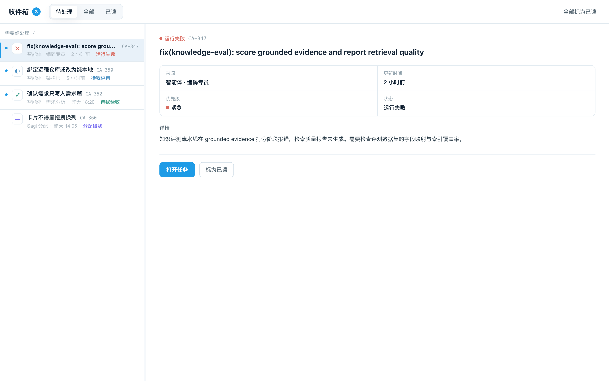
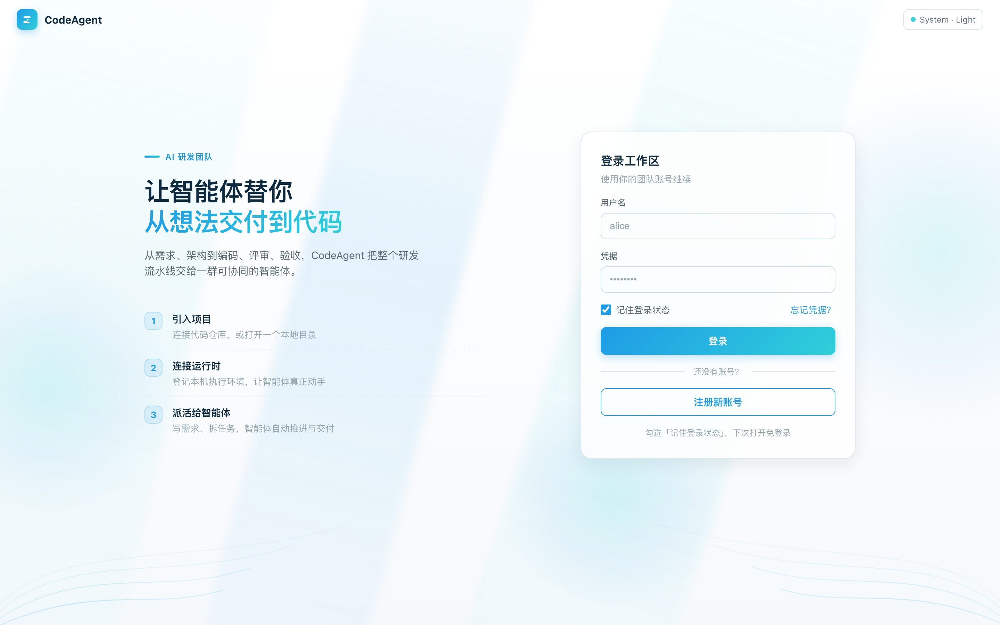
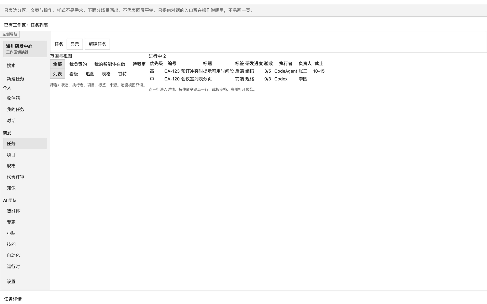

CASE 02 · CODEAGENT · OPEN SOURCE
A design system that
AI agents can actually read.
AI coding agents are fast, but they don’t understand a design system from screenshots. I worked out how to keep their speed while making every design decision inspectable — from semantic tokens, to schemas, to an MCP layer agents query on demand.
- Role
- Core contributor · wireframes, prototypes, interaction specs
- Users
- Developers reviewing output · agents generating it
- Timeline
- 2026 · open source
- Recognition
- OpenAtom First Prize · Gitee GVP · WIC Wuzhen MVC
- PROBLEM
- Agents were either fast and wrong, or right and slow.
- DECISION
- Treat the agent as a user of the design system, and give it context on demand.
- TRADE-OFF
- Less styling freedom and one extra call, for output that is correct and checkable.
- RESULT
- 6 agents on one shared system; 24 quality-gate cases.

1PROBLEM
Agents were either fast and wrong, or right and slow.
Testing real agent runs against the workbench surfaced two baselines, and neither was acceptable for a product team.
BASELINE A · HIGH AUTOMATION, LOW CONTROL
Agents generate full screens from a prompt. Styles drift, components that don’t exist get referenced, required fields go missing.
BASELINE B · HIGH CONTROL, LOW AUTOMATION
People hand over files, schemas, and token references for every task. Output is correct, but the manual work cancels the speed agents promised.
How can agents keep their speed when they don’t understand the design system?
2UX JUDGMENT
Treat the agent as a user of the design system — with its own needs.
Agents need names, not pixels.
“Primary”, “surface”, “selected” are stable concepts an agent can reason about. A hex value is not.
Fewer choices, better output.
Generation should be composition from governed building blocks, not free styling.
People decide direction.
Checkpoints — prototypes, diffs, approvals — keep product judgment and final quality with the person.
3EXPLORATION
From tokens, to schemas, to context on demand.
I moved through three levels of “how much the agent knows”, keeping what worked at each step.
The full pipeline, step by step
Stable role names
Governed building blocks
Fetched from the real project
24 CI quality cases
Prototypes, diffs, approvals
4TRADE-OFFS
Speed and control, balanced on purpose.
WE GAVE UP
Free styling: agents can only compose governed components.
TO GET
Output that matches the design system, without someone hand-checking every screen.
WE GAVE UP
A little speed: agents make an extra MCP call for context.
TO GET
Correct, inspectable output, and errors the agent can fix on its own.
WE GAVE UP
Full automation: people approve at three checkpoints.
TO GET
Prototype, diff, and merge stay human decisions — so product judgment stays with the team.
5PROTOTYPE & TEST
Every core flow was a clickable prototype before it was a feature.
I wrote low-fidelity wireframes for each requirement, pairing a layout with numbered use cases, then turned the key flows into high-fidelity HTML prototypes. The team tested hierarchy and navigation on these before implementation expanded.



From wireframe to spec. Twenty of the requirement wireframes are mine — the fused workbench, workspace navigation, onboarding, team home, and more. See all twenty in the Playground →



6RESULT
Agents compose from the system instead of guessing at it.
7REFLECTION
What I learned.
Designing for an agent is still designing for a user: find out what it misunderstands, then remove the ambiguity. Next, I would measure how often generated screens pass review on the first try, and test the review checkpoints with developers to see where they still feel out of control.